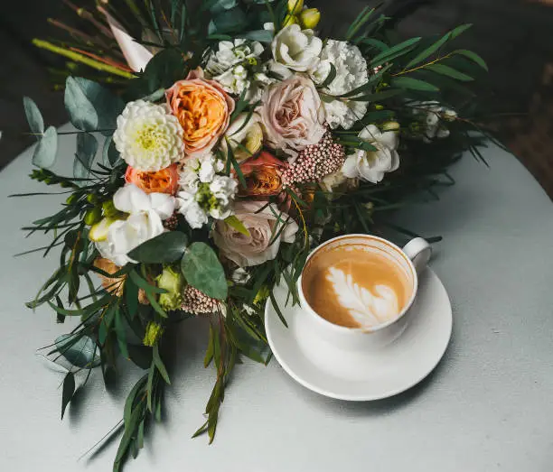
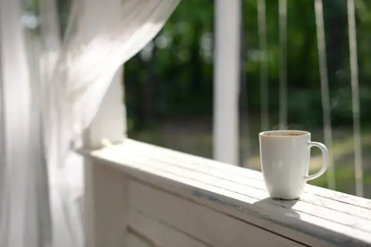

Ceremony
- Four settings: The Woods, Riverside Dock, Courtyard and Covered Bridge
- Rustic benches and arbor included
- Barn serves as the indoor ceremony plan in inclement weather
- Pets may join the ceremony and reception
- Horse corral available
Estate & Inn · Fenton, Michigan
A private countryside estate where the wedding morning, ceremony, celebration, and one last coffee can belong to the same story.
Explore the estate →Willow Lily pairs a historic barn, an intimate Inn, water, woods, gardens and open meadow with the rare luxury of time.
Not one backdrop. A collection of places that change with the light, the season, and the way you imagine your ceremony.

Under a canopy of Michigan green.
Vale Royal is an eight-acre private wedding estate in Fenton for celebrations of up to 160 people, including vendors. The Inn, historic barn, four ceremony settings and practical event essentials work together as one wedding experience.
The ceremony is one of the biggest choices you will make here, so it deserves more than a thumbnail in a gallery.
Green, intimate and naturally framed by mature trees.

Waterfront vows with the landscape opening behind you.

A garden-forward setting close to the heart of the estate.

A distinctly Vale Royal setting rooted in countryside character.

There is room for the quiet parts too. Dresses on doors, letters opened twice, champagne in the bridal suite, and the strange beautiful hour before everything begins.
Enter the weekend →


Because the best part should not have to fit between setup and last call.




Your wedding deserves more than a day.
Every option accommodates up to 160 people, including vendors. A 50% reservation payment secures your date. The remaining venue fee is due six months before the wedding.
Sunday, 1 PM to 11 PM
Friday or Saturday, 9 AM to midnight
Friday 11 AM to Sunday 11 AM

The Inn is not an afterthought. It is where the wedding morning begins, where the dress hangs before it becomes a memory, and where the weekend gets one more quiet chapter.
Three bedrooms, space for up to six overnight guests, and daytime access woven directly into the wedding experience.
Stay for the wedding →

Tour time should be spent imagining your wedding here, not collecting basic facts.
Choose your own caterer. There is no full commercial prep kitchen, so caterers should be equipped for truck-to-table service. A support room has a sink, refrigerator and ice chest.
Alcohol is permitted. Event liability insurance is required for Friday through Sunday, with Tyrone Township and Vale Royal LLC added as additional insured. The venue estimates the policy at approximately $130.
Music ends at 11:30 PM. Friday and Saturday events conclude by midnight. Sunday rental concludes at 11 PM.
The barn is the indoor ceremony backup. Heaters and air-conditioning units support seasonal comfort.
Pets may join the ceremony and reception. Pets are not generally allowed loose inside the Inn, though a crated pet may be accommodated in a designated area.
A tent is not included, but one up to 40 × 60 feet may be rented. The property remains limited to 160 people.
The venue is handicap accessible, with a golf cart and driver available for guests needing assistance.
Décor and debris must be removed after the event. Vale Royal disposes of garbage placed in the provided bins. Failure to clean up can result in a $250 fee.
Rice, confetti, bubbles, glitter, large fireworks and silly string are prohibited. Sparklers may be used away from the barn.
The estate is designed for celebrations of up to 160 guests, including vendors.
Yes. Couples may bring their own caterers and vendors, subject to venue requirements and event policies.
The barn provides an indoor weather-backup option, so the celebration can continue without losing the atmosphere of the estate.
Pets can join the ceremony and reception. Overnight Inn policies can be discussed during planning.
A 50% reservation payment secures the date. The remaining balance is due six months before the wedding.
Natural wood x-back chairs for indoor use, rustic ceremony benches, round and rectangular tables, floor-length white or champagne linens and a variety of napkin colors are included.
Yes. There is no full commercial prep kitchen, so caterers should be prepared for truck-to-table service. A support room provides a sink, refrigerator and ice chest.
Yes, with the required event liability insurance and additional-insured requirements.
Yes. Bonfire pits, firewood and attendants are included.
No, but a tent up to 40 × 60 feet may be rented without increasing the 160-person occupancy limit.
A refund is available only if the cancelled date can be rebooked with a comparable event.
Tours are offered Saturdays by appointment at 11 AM, noon or 1 PM, with one hour reserved for each couple. Share the essentials so your visit can focus on the decisions that matter.